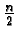
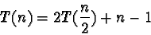
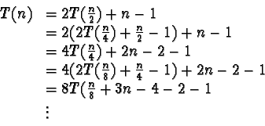
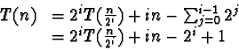
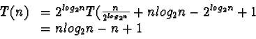

|
One drawback this sorting method is that in order to combine two lists
of n elements we either need storage for 4n data items in memory,
or a clever way of merging lists. Using the most straightforward
algorithm for merging two sorted lists we will need n storage cells
for each of the two lists to be merged, and then another 2n for the
aggregate list which we are building from members of the two sorted
input lists.
There are some more space-efficient methods of building the aggregate
list. One attack on this space problem is to use linked-lists
to represent the data items and then build the aggregate list by
changing pointer values. This way no space for the aggregate list
need be allocated as it will be built of the memory already used by
members of each sorted input list. There are also other ways of
building an aggregate list in the ``unused'' (or ``already used'')
space of the two input lists but this saved space sometimes comes at
the cost of a slight penalty in runtime and an increase in algorithm
complexity.
Unlike the Quicksort, the Mergesort does not concern itself with the
ordering of its sublists but rather accomplishes the goal of sorting
the entire data set by sorting very small subsets and then merging
these back together again in order. The Mergesort's performance,
therefore, is not greatly affected by the arrangement of values in the
input set. Thus, the worst case performance of the Mergesort does not
deteriorate for certain ``bad'' data orders.
Mergesorts are often used to sort linked lists both because the
algorithm does not require random access to the data set on which it
is operating and because, due to the nature of a linked list, the need
to allocate extra space for aggregate lists is eliminated (as
discussed above). The Mergesort can also be modified slightly to
produce an effective external (i.e. on disk) sort.
Here is a more formal analysis of the algorithm. In order to
Mergesort two items we need one comparison. Thus:
T(2) = 1
In order to Mergesort n items we will need to split the n items
in to two sets of

and then combine them. In order to
merge two data sets of
items we will need to make, at
most, (n-1) comparisons. Thus:

If n is restricted to be 2x then T(n) can be expressed as:

Therefore,

Now, since
i = log2 n:

|